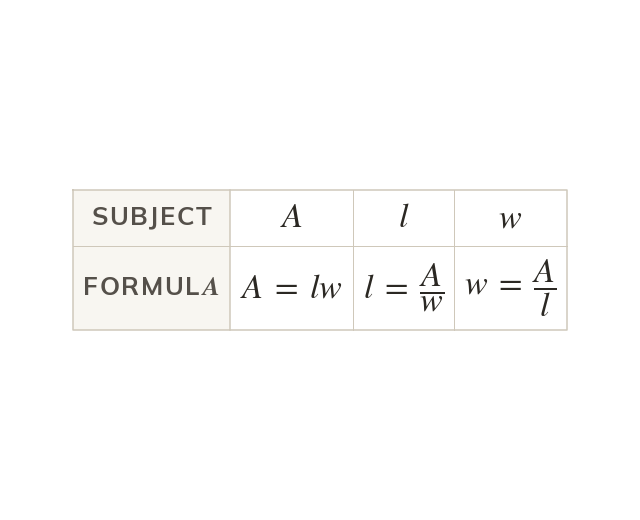
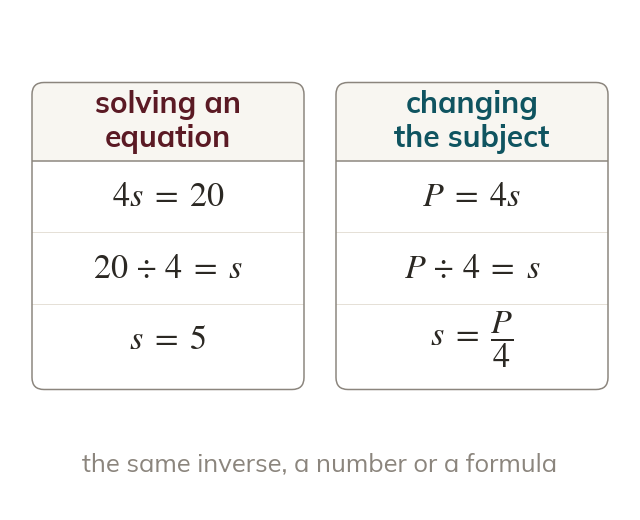
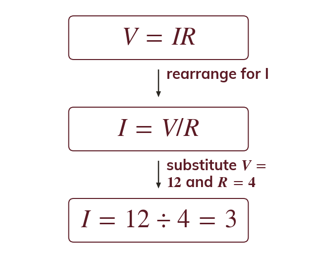
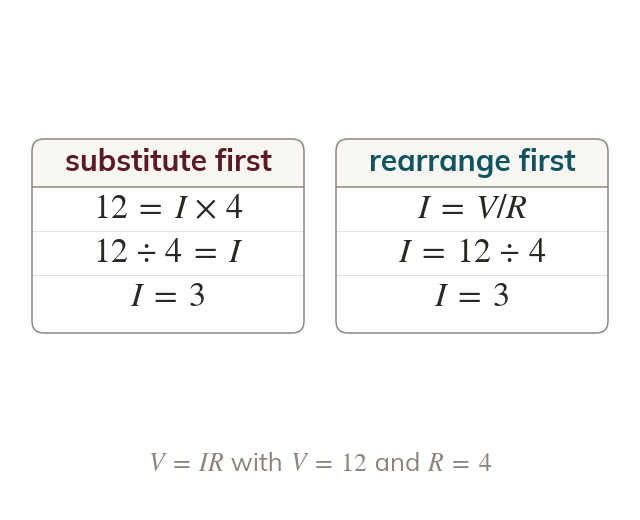

One formula, many subjects
The subject of a formula is the variable standing alone on one side. Changing the subject rewrites the same relationship so that a different variable stands alone.
A formula is written to give one quantity, but a scientist or an engineer often needs a different one. Changing the subject turns the same formula round so that it gives whichever quantity you need.
Work down the page at your own pace. Write every answer in your book first, then click to check it.
Read each card, then follow the worked examples one step at a time.

The subject of a formula is the variable standing alone on one side. Changing the subject rewrites the same relationship so that a different variable stands alone.

Free the variable with inverse operations on both sides, as in solving. The result is a formula, not a number.
Pick an answer. If it's wrong, the feedback tells you which mistake it was.
Read each card, then follow the worked examples one step at a time.

If the formula gives the wrong variable, rearrange it first. Then substitute the known values.

Substituting first leaves an equation to solve, while rearranging first leaves a single calculation. Both routes give the same value.
Pick an answer. If it's wrong, the feedback tells you which mistake it was.
Finished? Next lesson: 8.10.2 Rearranging with Powers and Roots.
Log in, then search for a code to practise that skill.
Videos, worksheets and more on each part of this lesson.